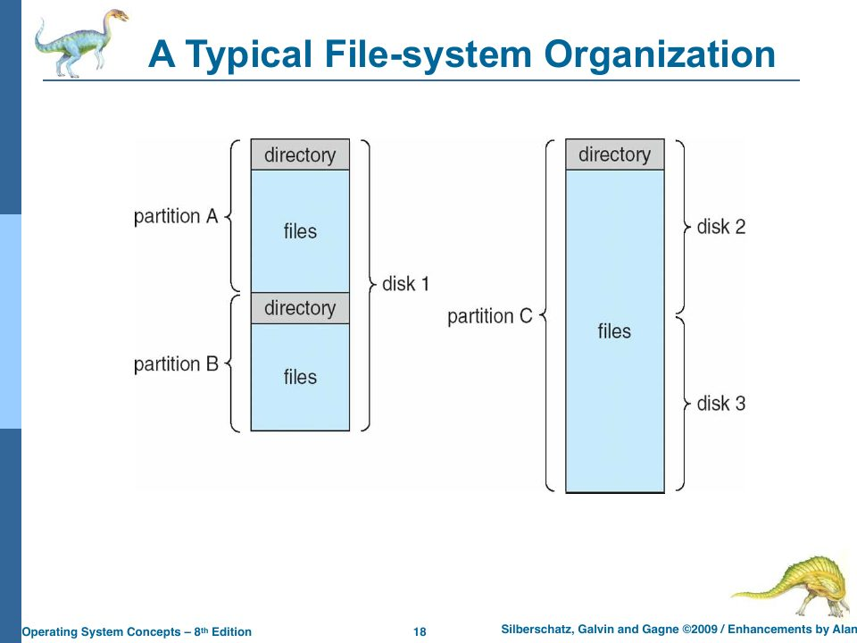

The File-System Interface
Slides: Chapter 10, “File-System Interface,” pp. 717–752. Project Part Four; Lab 100.
The course takes the file system in two halves, and so does this book. This chapter is the interface: what a file is, what you can do to one, and how files are organized into directories, as seen by a user or a program. Chapter 15 is the implementation: how rObSen’s disk driver turns those operations into reads and writes of blocks. Lab 100 frames the whole project: “implement a file system API supporting the commands specified in your Issues and Project Part Four.”
What is a file?
A file is a “contiguous logical address space” (slide p. 720): from the user’s point of view, a sequence of bytes (or records) with a name, regardless of how scattered it is on the disk. Whether that sequence has internal structure (lines, fixed records, a formatted document, a relocatable load module) is decided either by the OS or by the program that reads it (p. 721). rObSen’s files are unstructured strings of characters.
Attributes
The slides list the attributes a file system typically keeps (p. 722), all of them “kept in the directory structure, which is maintained on the disk.” Here they are against rObSen’s directory entry:
| Attribute (slide p. 722) | rObSen |
|---|---|
| Name, the only human-readable one | yes, up to 21 characters in practice (Chapter 15) |
| Identifier, a unique number | no; the name is the identity |
| Type | no; but a leading . marks a file hidden |
| Location, a pointer to the data | yes: a track/sector/block triple |
| Size | yes, in characters |
| Protection | no |
| Time, date, user identification | creation time only (YYYYMMDDHHMM), no owner |
Operations
A file is “an abstract data type” (p. 723) with operations: create, write, read, reposition, delete, truncate, and two bookkeeping operations, open (find the file’s directory entry and copy it into memory) and close (write it back). Open files need an in-memory open-file table with, per open file, a file pointer (current position), an open count, the file’s disk location, and access rights (p. 724). Some systems also provide file locks, either mandatory (enforced by the OS) or advisory (processes are expected to check) (p. 725).
rObSen’s shell exposes these operations:
| Operation | Command | Driver method |
|---|---|---|
| create | create <name> | createFile(name) |
| write | write <name> "data" | writeFile(name, data) |
| read | read <name> | readFile(name) |
| delete | delete <name> | deleteFile(name) |
| list the directory | ls, ls -a | listDirectory() |
| copy | copy <existing> <new> | copyFile(src, dst) |
| rename | rename <current> <new> | renameFile(cur, next) |
| make another name for the same data | link <existing> <new> | link(src, dst) |
| initialize the disk | format, format -quick | format({ quick }) |
| check and repair | chkdsk [--no-recover] [--no-reclaim] [--no-defrag] | runCheck(opts) |
What’s missing is just as instructive. There’s no open or close, so every operation looks the file up by name in the directory again; there’s no file pointer, so there’s no reposition and no reading part of a file; every write replaces the whole contents (no append, and truncate is implicit); and there are no locks, which is fine because only the shell, running in one JavaScript thread, ever touches files.
Access methods
Sequential access reads and writes in order: read next, write next, reset. Direct access reads or writes block n in any order (slides pp. 729–731). Sequential access can be simulated on a direct-access file by keeping a current-position pointer. An index file can sit in front of a large relative file to find records quickly (p. 732).
rObSen offers neither in the usual sense: a file is read or written all at once, as a single string. Underneath, the disk is very much direct access: readBlock(t, s, b) reads any block in constant time.
Magic numbers
Relying on extensions to know a file’s type is unreliable, so many formats begin with a magic number (p. 727): Java class files start with 0xCAFEBABE; PNG files with 0x89 'P' 'N' 'G'. rObSen doesn’t type files, but its disk has a magic number of sorts: the first character of every block is 1 if it’s in use and 0 if not, and the driver reads that before anything else.
Directories
A directory is “a collection of nodes containing information about all files” (p. 735), supporting search, create, delete, list, rename, and traverse (p. 736). It should be efficient to search, convenient to name things in (two users can use the same name; one file can have several names), and support grouping (p. 737). The slides walk through the classic organizations:
- Single-level (p. 738): one directory for everyone. Simple, with naming and grouping problems.
- Two-level (p. 739): one directory per user. Solves naming collisions between users, but no grouping.
- Tree-structured (pp. 741–742): directories inside directories, path names (absolute and relative), a current working directory. Deleting a directory can delete a whole subtree.
- Acyclic graph (pp. 743–744): a tree in which files and directories can be shared, appearing in more than one place, via links.

rObSen has a single-level directory: one flat list of up to 8 files (Chapter 15 shows why eight). No subdirectories, no paths, no current directory. Try create f9 after creating eight files and it fails.
Hidden files
Names that start with a period are hidden: ls skips them, and ls -a shows everything, with sizes and creation dates. That’s the UNIX convention (.bashrc, .git), where it began as a side effect of ls skipping the . and .. entries. In rObSen, buildDirectoryEntry sets a hidden flag in the entry if the name starts with a dot.
>create .secret
Created .secret
>create pub
Created pub
>ls
pub
>ls -a
.secret 0 bytes 2026-10-18 22:21
pub 0 bytes 2026-10-18 22:21
Links, and the dangling-pointer problem
With an acyclic-graph directory, one file can have two names. What happens when one name is deleted? “If dict deletes list → dangling pointer” (slide p. 744): the other name now points at freed space, which may be reused by an unrelated file. The slide lists the solutions: backpointers from the file to every name, so all can be fixed or removed; or an entry-hold count (a reference count), so the data is freed only when the last name goes away. UNIX uses the count: each inode records how many directory entries (“hard links”) point at it.
The project spec asks the same question about link: “make both file names point to the same file data. (What happens on delete?)”
rObSen’s answer, in deleteFile: remove the directory entry, then scan every remaining entry, and free the data block only if no other entry still points at it. That’s a reference count computed on demand rather than stored, and it prevents dangling pointers correctly.
There’s a subtler problem the slide doesn’t mention, and rObSen has it. UNIX keeps a file’s attributes (size, times, permissions) in the inode, which all its names share. rObSen keeps them in each directory entry, and link copies them at the moment of linking:
>create a
>write a "data"
>link a b
>write a "hello world"
>ls -a
a 11 bytes 2026-10-18 22:21
b 4 bytes 2026-10-18 22:21
>read b
hello world
Both names see the new data, but b still believes the file is 4 bytes long. Attributes that belong to the file are stored with the name. The real fix is to separate the two, which is exactly what an inode (or the slides’ file control block, Chapter 15) is for.
Mounting, sharing, and protection
The chapter ends with topics rObSen doesn’t touch, but which are fair game for exams:
- Mounting attaches a file system on some device to a point in the directory tree (p. 733 and following).
- Sharing across users relies on user IDs and group IDs (p. 746); across machines it relies on remote file systems such as NFS (UNIX) and CIFS (Windows), with naming services such as LDAP and DNS (p. 747).
- Protection controls what can be done and by whom: read, write, execute, append, delete, list (p. 748). UNIX groups users into three classes (owner, group, public) and gives each three bits,
rwx.chmod 761 gamemeans owner111(rwx), group110(rw-), public001(–x) (p. 749).
chmod 754 report allow? Owner 7 = 111 = read, write, execute. Group 5 = 101 = read and execute. Public 4 = 100 = read only.
Check yourself
- Which of the slide’s file operations does rObSen implement, and which would need an open-file table to implement?
- Why can’t rObSen’s directory support two users with files of the same name?
- What would
delete ado in the link example above, and what wouldread bshow afterwards?
Answers
- Create, write, read, delete, and (implicitly) truncate. Reposition, and reading or writing part of a file, need a per-open-file position pointer, which lives in an open-file table.
- Because it’s single-level: one flat namespace, and
createFilerefuses a name that already exists. A two-level directory would give each user a namespace. - It removes
a’s directory entry but keeps the data block, becausebstill points at it.read bstill showshello world. (Andls -astill claimsbis 4 bytes.)